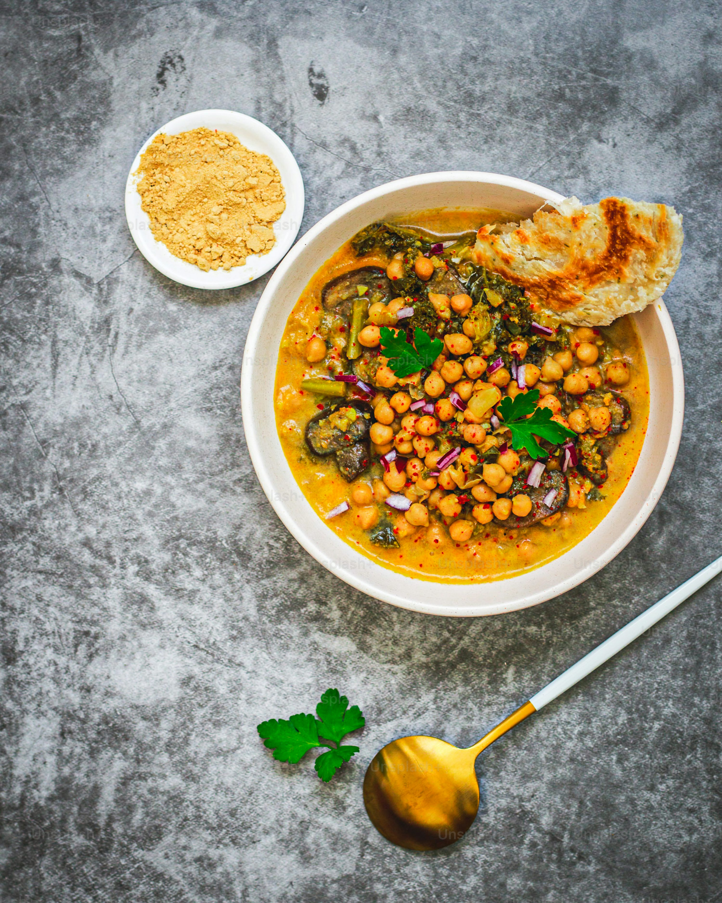

Chole Recipe

Description
Chole, also known as chana masala, is a popular North Indian dish made with chickpeas cooked in a spicy and tangy tomato-based gravy. It’s flavorful and often served with bhature, rice, or roti.
Ingredients
- 1 cup dried chickpeas (soaked overnight)
- 2 onions, finely chopped
- 2 tomatoes, pureed
- 2 green chilies, chopped
- 1 tbsp ginger-garlic paste
- 2 tsp chole masala powder
- 1 tsp cumin seeds
- 1 tsp red chili powder
- 1/2 tsp turmeric powder
- Salt to taste
- 2 tbsp oil
- Fresh coriander leaves for garnish
Steps
- Soak chickpeas overnight and pressure cook until soft.
- Heat oil in a pan and add cumin seeds.
- Add chopped onions and sauté until golden brown.
- Add ginger-garlic paste and green chilies, cook for 2 minutes.
- Add tomato puree, turmeric, red chili powder, and salt. Cook until oil separates.
- Add chole masala powder and mix well.
- Add cooked chickpeas along with some cooking water and simmer for 15 minutes.
- Garnish with fresh coriander leaves and serve hot.
Back to Homepage